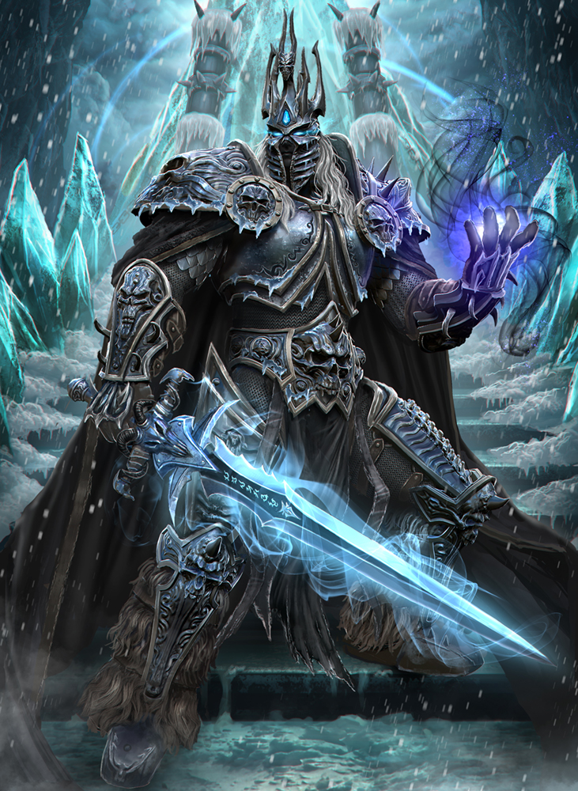

The Lich King
| The Lich King | |
|---|---|
|  | |
| Race | Human (Undead)" |
| Level | ?? Boss |
| Reaction | Alliance/Horde |
| Loction | The Frozen Throne(Icecrown Citidel) |
| Status | Killable, Defeated(lore) |
{kind=link}
The Lich king is the final boss in the Icecrown Citadel raid, and the final boss of "World of Warcraft: Wrath of the Lich King." The Lich King is a long and challenging battle for survival. All classes are tested to the limits of their abilities, in particular all raid members have to react quickly to various abilities, often several at the same time. The encounter is rather unforgiving; most players must react properly in various situations, and all players get ample opportunity to commit mistakes which then wipe the raid. This encounter is a fitting end to Wrath of the Lich King and on par with Yogg-Saron in Ulduar.
-
1.
Abilities
- 1.1 Phase 1
- 1.2 Phase 1.5 and 2.5
- 1.3 Phase 2
-
1.4
Phase 3
- 1.4.1 Frostmourne
- 1.4.2 Spirit Warden
- 1.4.3 Teranas Menethil
- 2. Preparation
-
3.
Tactics
- 3.1 Phase 1
- 3.2 Phase 1.5
- 3.3 Phase 2
- 3.4 Phase 2.5 - Remorseless Winter
-
3.5
Phase 3
- 3.5.1 Inside Frostmourne
- 3.6 Phase 4
- 3.7 Heroic Difficulty
Abilities
The Lich King melees for roughly 40,000 on an item level 264 geared tank on 25-player difficulty. The Lich King enrages after 15 minutes of combat, gaining 900% damage and 150% attack speed. However, he is notably still affected by taunt abilities, meaning you can "Ping-Pong" him around the room when he enrages.
Phase 1
- Summon Drudge Ghouls - 3 Dudge Ghouls over 3 seconds. No abilities outside of basic melee
-
Summon Shambling Horrors - Summons a Shambling Horror. Stunnable
- Enrage - Increases Physical damage by 200%
- Frenzy - Increases the caster's attack speed by 50% and the Physical damage it deals by 100% for 10 min. Cast on Heroic when Horrors reach 20% health.
- Shockwave - Sends a wave of force in a cone in front of the caster, causing 150% weapon damage in a 20 yard cone.
-
Necrotic Plague - Infects the target with a deadly plague, causing 50,000 Shadow
damage every 5 seconds for 15 seconds. If the target dies while afflicted, or the effect
expires after its 15 sec duration, this effect will gain an additional stack and jump to a
nearby unit. The 15 sec timer is refreshed after each jump. If this effect is dispelled, it
will lose a stack and jump to a nearby unit in a 10 yard distance, if there is no target the
plague will be removed completely. Whenever this effect jumps, the Lich King's power will increase.
Disease
- Plague Siphon - Increases Lich King's physical damage dealt by 2%. Stack increases each time Necrotic Plague jumps.
- Infest - Deals 6,598 to 7,402 Shadow damage to all enemy players within 50,000 yards. In addition, the targets will take increasing Shadow damage per second. This effect is removed when the target has more than 90% health. 2 sec cast. 9,425 to 10,575 on 25-player
- Summon Shadow Trap - Summons a Shadow Trap with a 5 yard radius under a targeted player after a short delay. Any player who steps inside the Shadow Trap will cause it to explode, dealing 23563 to 26437 shadow damage to all players within 10 yards and knocking them off of the Frozen Throne. Heroic mode only
Phase 1.5 and 2.5
- Remorseless Winter - Creates a massive winter storm, dealing 7069 to 7931 Frost damage per second to all surrounding enemies within 45 yards.
- Pain and Suffering - Deals 2828 to 3172 Shadow damage in a cone effect in front of the caster. In addition, the targets will take 500 Shadow damage per second for 3 sec. 0.5 sec cast. Stacks to 5.
-
Summon Ice Sphere - Summons 1 Ice Sphere with around 6000 health. Moves
towards a random raid member. When it reaches its target...
- Ice Burst - Deals 9425 to 10575 Frost damage to all enemies within 10 yards, knocking them back. Instant. Knockback typically leads to getting blown off the edge of the platform.
-
Raging Spirit - Rips out a piece of the target's spirit, causing it to
attack them. Summons a Raging Spirit with...
- Soul Shriek - Deals 18850 to 21150 Shadow damage to all enemies in a 15 yard cone in front of the caster, silencing them for 5 sec.
- Quake - Sends out underground shockwaves, causing the edge of the platform to crumble. 1.5 sec cast. Cast at the end of the phase.
Phase 2
The Lich King retains Infest.
- Soul Reaper - Strikes the target for 50% weapon damage and afflicts the target with Soul Reaper. This effect deals 50,000 Shadow damage after 5 sec and increases the caster's haste by 100% for 5 sec. Used on the tank. 60,000 on 25-player and 10-player heroic, 70,000 on 25-player heroic.
- Defile - Defiles the area under a random target. Any enemies got within this area will be dealt shadow damage and cause the area to grow. Lasts 30s. 2 sec cast. Starts at 3000/sec on 10-player, 5000/sec on 25-player.
-
Summon Val'kyr - Summons a Val'kyr Shadowguard. Attempts to pick up a player and drop them off
the edge of Icecrown Citadel.
- Life Siphon - Deals 1850 to 2150 Shadow damage to an enemy target, healing the caster for 10 times the damage dealt. 2 sec cast. Heroic mode only. Cast at 50% health after dropping the player.
Phase 3
The Lich King retains Soul Reaper and Defile.
- Harvest Soul - Attempts to harvest the target's soul, dealing 7500 Shadow damage per second for 6 sec. If the target is still alive after the channel is completed, the target's soul will be transfered into Frostmourne to be devoured.
- Harvest Souls - Attempts to harvest the soul of all nearby enemies, dealing 2000 Shadow damage per second for until cancelled. If a target is still alive after the channel is completed, that target's soul will be transfered into Frostmourne to be devoured. Heroic mode only.
- Harvested Soul - Applied when a raid member dies inside Frostmourne, increases damage dealt by 200% and size by 50%. Normal mode only, 15 sec duration.
- Harvested Soul - Applied when a raid member dies inside Frostmourne, increases damage dealt by 500% and size by 50%. Heroic mode only, can stack, 15 sec duration.
-
Vile Spirits - Creates 10 Vile Spirits which will attack enemies after 30 seconds.
- Spirit Burst - Sacrifices the caster, dealing 18850 to 21150 Shadow damage to all enemies within 5 yards.
Frostmourne
- Harvest Soul - Slowly consumes the soul of the target, dealing 2000 Shadow damage per second. Debuff on players inside Frostmourne, does NOT deal damage on normal.
Spirit Warden
- Soul Rip - Deals increasing Shadow damage to your target every second for 8 sec. Channeled on Terenas. Magic debuff - Can be dispelled
- Dark Hunger - Heals the caster for half of any damage dealt.Aura on the Spirit Warden
- Destroy Soul - Instantly kills the raid member inside Frostmourne if Terenas dies. Causes Arthas to gain the powerful Harvested Soul debuff
Teranas Menethil
- Light's Favor - Heals the caster for 5000 every second and increases damage dealt proportional to health. Aura on Terenas
- Restore Soul - Returns the target's soul to their body, bringing them back to life. Cast on the raid member inside Frostmourne after the Spirit Warden's death. 2 sec cast.
- Restore Soul (Heroic) - Terenas starts casting this when the raid enters Frostmourne in Phase 3 of the Heroic encounter. The raid is ported out when it completes. 40 sec cast.
Phase 4
- Fury of Frostmourne - Deals 1,000,000 Shadow damage to all enemies and rendering them unable to release spirit or resurrect. 2.6 sec cast. Cast at the beginning of phase 4
- Raise Dead - Raises the dead back to life to serve as undead slaves to the Lich King. Channeled. Cast after gloating over the corpses of the raid.
Teranas Menethil
- Mass Resurrection - Resurrects all nearby fallen allies. Cast on the raid after Terenas is freed from the shattered Frostmourne.
Strategy
Editor Mode: +
test